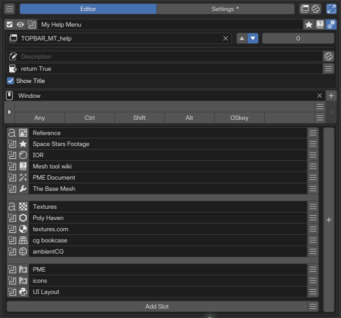

Regular Menu Editor¶
Regular Menu creates dropdown menus with items arranged vertically, in the same form as Blender’s dropdown and context menus.
Configuration guide — features, combinations, and uses (for AI)
Name: Regular Menu / Type ID: RMENU. A variable number of vertically arranged slots, optionally organized with columns and separators. Supports Command / Property / Menu / Hotkey / Custom.
Assignments: Command executes Python, Property displays an RNA-path widget, and Custom draws with Blender’s
UILayout. Hotkey invokes an operator from the key assignment at runtime.Menu combinations: behavior depends on the target and options: open another menu, place a Property / Property Stack switch, or expand a Regular Menu.
Placement: invoke from a hotkey, extend an existing Blender menu, or expand inside a Pie Menu or Popup Dialog. Check the destination class and runtime editor/mode.
Uses: named lists of actions and tool menus grouped in columns. Consider Pie Menu / Vector Menu for directional selection.
See menu combinations for expansion, Extend Target for insertion, and menu slots for items.
Interface and editing workflow¶

1Name and basic controlsCheck the menu name and enabled state, and open the preview or advanced settings. 2Extend TargetSet the target, position, and order within an existing menu. This example appends to the Help menu. 3Advanced settingsSet the description, availability conditions, and title display. 4Keymap / HotkeyChoose where and with which key to invoke the menu independently. No key is assigned in this example. 5Menu slotsArrange items vertically, with headings and separators.Set the name, availability, and invocation method, then build the menu from slots.
Name and basic controls¶
Controls include enabled state, preview, menu selection, name, tags, documentation, and advanced settings. See selected menu settings.
Keymap / Hotkey¶
Use Keymap to select where the menu is available, and Hotkey for the trigger key and modifiers. Open Mode determines the trigger action. See the shared Hotkey settings.
Extend Target¶
This row directly below the top bar inserts the Regular Menu into an existing Blender menu.
Added in version 2.0.0: Multiple Pop-up Dialogs / Regular Menus can share an Extend Target.
- Extend Target:
The destination Blender menu class ID, such as
VIEW3D_MT_object. No insertion occurs when it is unset.- Side:
Insertion position: ▲ is the start of the target menu; ▼ is the end.
- Order:
Display order when several menus share a Target. Lower values come first.
You can also obtain the destination ID through Interactive Panels.
Menu slots¶
Slots appear as menu items from top to bottom in each column. Use the following controls according to the direction you want to expand:
A. Add Slot below — add an item: appends an item to that column, extending it vertically.
B. Rightmost ＋ — Add Column: adds a column after the last one. For example, separate selection tools on the left from transform tools on the right. Use Add Slot below each new column to add its items.
Slot order becomes display order.
Slots can be added, removed, and reordered.
Disabled slots are omitted from the displayed menu.
An unassigned slot (empty slot type) draws a separator.
Reference another menu with a Menu slot to create a submenu.
Advanced settings¶
Description and Poll set the tooltip and availability condition. Python can provide a dynamic description. See the shared advanced settings.
- Show title:
Toggles the menu name as a heading at the top of the menu.
Combining menus¶
Added in version 2.1: A Regular Menu can be expanded inside a Pie Menu, Popup Dialog, or another Regular Menu.
Select a Regular Menu in the calling slot’s Menu tab and enable Expand Regular Menu to draw its contents inline. With this off, it opens when selected. Distinguish this from placements that offer Open on Mouse Over.
When placing an existing Blender menu, you can likewise choose a dropdown or expanded contents. A reference to a PME Regular Menu is different from specifying a Blender menu class.
Slot Editor¶
Sets the Python code evaluated when the item is executed. When calling an operator, use one that supports the current editor, mode, and selection.
# Add a cube in the 3D Viewport's Object Mode
bpy.ops.mesh.primitive_cube_add()
Writing commands
The input limit is 1,024 UTF-8 bytes. Text containing multibyte characters reaches the limit sooner than 1,024 characters.
Separate short simple statements with ;; do not mechanically flatten indented blocks into one line.
See Code Input and Execution for checking length and moving code into an external script.
Global variables
Examples of available globals:
C: the context PME provides to scriptsO: bpy.ops (Blender operators)E: event information
See Scripting Reference for details.
Specify an object property path to display it as a widget.
For example, bpy.context.object.location displays and edits the object’s location.
Tool settings referenced with tool_props() appear only when available in the target editor, mode, and tool.
Otherwise they are hidden. Use the Custom tab to specify your own display conditions or alternative content.
See the API reference for the function’s arguments.
Advanced property operations
Use Property Editor when you need indexing or more complex property operations.
When clicked, calls another menu item created in PME. Examples:
Display a Popup Dialog with
Expand Popup DialogDisplay a Regular Menu with
Open on Mouse OverRun a Macro Operator
When clicked, finds and executes the operator assigned to the specified Blender hotkey.
For example, use Blender’s standard G for Move or R for Rotate.
Sets Python code evaluated when the UI is drawn.
L is the layout object; use Blender’s layout API to build the UI.
This code also runs on redraw. Place buttons for actions such as adding or removing objects,
rather than performing those actions directly while drawing.
# Display a label inside a box
L.box().label(text="Add Mesh")
# Arrange several buttons vertically
col = L.column(); col.operator("mesh.primitive_cube_add", text="Cube"); col.operator("mesh.primitive_uv_sphere_add", text="Sphere")
These are two independent examples. To place several UI elements in one Pie Menu slot, wrap them in a single column or box as in the second example. Adding multiple elements directly to the pie layout can shift subsequent slots to different directions.
The input limit is 1,024 UTF-8 bytes. See Code Input and Execution for length limits, multiline code, and external scripts.
Advanced uses¶
Expand inside a Pie Menu¶
Opening a Regular Menu from a Pie Menu slot combines radial selection with a list. Choose the Menu tab in the Pie Menu Slot Editor and link the Regular Menu. Enable Expand Regular Menu on that slot to place its contents in the pie; leave it off for a submenu that opens when selected.
Dynamic dropdowns and Enums¶
A one-line Custom slot can call Blender’s prop_menu_enum directly. This is a typical way to display an Enum property as a dropdown menu.
L.prop_menu_enum(C.object, "display_type")
Draw in another layout with draw_menu()¶
While open_menu() opens a Regular Menu as a new popup, draw_menu() draws its contents in the current layout. Use it to reuse a Regular Menu in a Pop-up Dialog or Panel Group.
draw_menu("Regular Menu Name")
A launcher for Stack Keys and Macro Operators¶
List Stack Keys or Macro Operators in a Regular Menu to create a command list. The two approaches below use different invocation routes.
Direct Menu slot reference — target the Stack Key or Macro in a Menu slot. For a Macro, this preserves the route that supports adjusting arguments in Blender’s Adjust Last Operation (F9) panel.
open_menu()from a Command slot — executeopen_menu("Name")in Command. Use this when code should control which menu is called, such as through a condition.
open_menu("My Macro Operator")
Combine Extend Menus¶
Added in version 2.0.0: Several Regular Menus can share an Extend Target and use Poll to control which ones appear.
See Interactive Panels and Extend Panel for Extend Target / Side / Order and adding items through Interactive Panels.
Reference videos (original author’s channel)¶
From roaoao’s videos. These show an older interface and workflow.